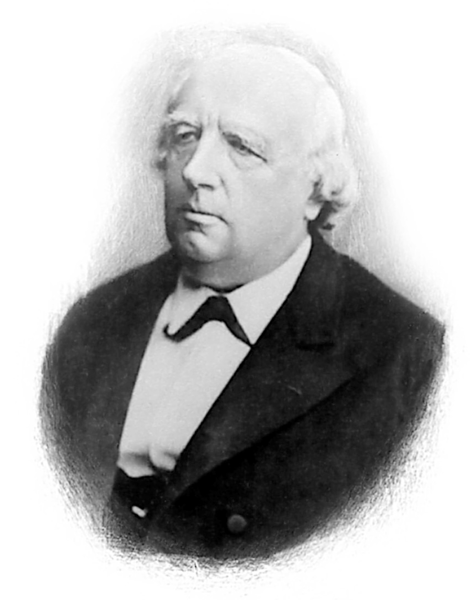

The $\epsilon,\delta$-definition of a limit is the result of a 200-year foundational crisis. For the first century and a half after Isaac Newton and Gottfried Wilhelm Leibniz invented calculus, the subject was an embarrassing paradox: it was the most successful scientific tool in human history, yet its logical foundations rested on a blatant algebraic contradiction.
The history of $\epsilon,\delta$ is the story of how 19th-century mathematicians—led by Bernard Bolzano, Augustin-Louis Cauchy, and Karl Weierstrass—rescued mathematics by banishing the fuzzy ideas of time, motion, and "infinitely small quantities," replacing them with static inequalities and the adversarial game of tolerances you teach today.
When Newton (in the 1660s) and Leibniz (in the 1670s) independently developed calculus, they needed to calculate instantaneous rates of change—the slope of a tangent line at a single point.
To find the derivative of $f(x)=x^2$, they added a tiny increment $\Delta x$ (which Leibniz called an infinitesimal $dx$ and Newton called a moment of a fluent) and computed the ratio of differences:
Here, they performed a sleight of hand that haunted mathematicians for 150 years:
To find the derivative of $f(x)=x^2$, they added a tiny increment $\Delta x$ (which Leibniz called an infinitesimal $dx$ and Newton called a moment of a fluent) and computed the ratio of differences.
Here is exactly what happens in the algebra before the illegal division step:
To get from $\frac{\Delta x \cdot (2x + \Delta x)}{\Delta x}$ to just $2x + \Delta x$, Newton and Leibniz crossed out the $\Delta x$ on the top and the bottom.
Mathematically, crossing out those terms is exactly the same as dividing by $\Delta x$. You are asserting that $\frac{\Delta x}{\Delta x} = 1$.
This is perfectly legal if and only if $\Delta x$ is a real, non-zero number (like $0.1$ or $0.00001$). If $\Delta x = 0$, you are evaluating $\frac{0}{0}$, which is undefined mathematical nonsense.
To calculate the slope of the secant line, you must construct a right triangle. The base of this triangle is the increment $\Delta x$. As long as $\Delta x > 0$, the division $\frac{\Delta x}{\Delta x} = 1$ is legal. But if $\Delta x$ shrinks to exactly $0$, the triangle collapses into a single dot, destroying the "Run" and making division impossible.
In 1734, the Anglo-Irish philosopher and bishop George Berkeley published a devastating pamphlet titled The Analyst: A Discourse Addressed to an Infidel Mathematician. Berkeley pointed out that mathematicians were mocking theologians for believing in mysteries of faith while relying on an illegal algebraic trick—treating $\Delta x$ as non-zero when convenient for division, and zero a line later when convenient for simplification.
Berkeley famously mocked these vanishing increments in one of the most celebrated passages in the history of mathematics:
“And what are these same evanescent increments? They are neither finite quantities, nor quantities infinitely small, nor yet nothing. May we not call them the ghosts of departed quantities?”
Mathematicians knew Berkeley was right. Calculus worked in physics and astronomy, but nobody could explain why without violating the laws of logic.
Throughout the late 18th century, Europe's best mathematicians tried to patch the hole Berkeley had exposed:
The crisis reached a boiling point when Joseph Fourier submitted his work on heat conduction. Fourier demonstrated that a jagged, discontinuous square wave could be represented as an infinite sum of smooth, continuous sine and cosine waves:
This sent shockwaves through mathematics. Up to that point, mathematicians relied on geometric intuition—believing a "function" was a smooth curve you could draw with a pencil. Fourier's series proved that infinite processes could turn smooth curves into broken steps, and that visual intuition was completely unreliable. Mathematicians realized they needed an ironclad, purely arithmetic test for when a sequence or function converged.
The first person to strip physical motion out of continuity and limits was Bernard Bolzano, a Catholic priest, philosopher, and mathematician working in Prague. In an 1817 pamphlet proving the Intermediate Value Theorem (Rein analytischer Beweis), Bolzano defined what it means for a function $f(x)$ to be continuous at $x$: the difference $|f(x+\omega)-f(x)|$ can be made smaller than any given fraction $1/N$ provided $\omega$ is taken sufficiently small.
Bolzano had invented the $\epsilon,\delta$ concept in everything but the Greek letters. However, because he was working in relative isolation in Prague—and was soon censored and stripped of his university chair by the Austrian Habsburg authorities for his pacifist and socially progressive sermons—his mathematical work went largely unread for half a century.
Meanwhile, in Paris, Augustin-Louis Cauchy was tasked with teaching introductory analysis to engineering students at the École Polytechnique. Dissatisfied with the hand-waving in existing textbooks, Cauchy published two landmark works: Cours d'Analyse (1821) and Résumé des leçons sur le calcul infinitésimal (1823).
It is in Cauchy's 1823 lectures on derivatives that the symbols $\epsilon$ and $\delta$ first appear together in their modern roles:
Although Cauchy introduced the symbols $\epsilon$ and $\delta$ and used inequalities to prove theorems, he did not fully let go of kinetic language. In his definitions, he still wrote that a variable "approaches indefinitely" a fixed value.
Because Cauchy wrote his definitions in flowing French prose rather than strict quantifier order, he famously fell into a trap: Cauchy's Sum Theorem (1821). Cauchy "proved" that if a series of continuous functions converges at every point, the resulting sum function must also be continuous.
Five years later, the young Norwegian mathematician Niels Henrik Abel pointed out that Fourier's sine series was a counterexample—a sum of continuous sine waves that converged to a discontinuous sawtooth wave! Why did Cauchy's proof fail? Because without explicit quantifier order, Cauchy couldn't see the difference between:
The final architect who gave us the exact $\epsilon,\delta$ and $\epsilon,N$ definitions we teach today was Karl Weierstrass.

Karl Weierstrass, known as the "father of modern analysis," established the modern $\epsilon,\delta$ quantifier architecture through his rigorous Berlin lectures. His path to mathematics is legendary: sent to university to study law and finance, he spent four years fencing and drinking in beer halls before training as a secondary school teacher. After spending fifteen years teaching high school subjects in obscure Prussian country towns, he secretly published groundbreaking research in 1854 that earned him a professorship at the University of Berlin in 1856.
Weierstrass's path to mathematics is legendary. Sent to university by his father to study law and finance, he spent four years fencing and drinking in beer halls, leaving without a degree. He then trained as a secondary school teacher and spent nearly fifteen years in obscure Prussian country towns teaching high school mathematics, physics, German, geography, handwriting, and gymnastics—while secretly doing world-changing research on abelian functions by candlelight at night.
When he finally published a paper in 1854, the mathematical world was stunned, and he was appointed to a professorship at the University of Berlin in 1856.
In his Berlin lectures on calculus and function theory (especially his 1859–1860 course Einleitung in die Theorie der analytischen Funktionen), Weierstrass diagnosed the exact bug in Cauchy's work: the word "approaches."
Weierstrass realized that phrases like "as $x$ approaches $a$" or "gets closer and closer" smuggle time and physical motion into pure mathematics. Numbers on the real line do not move. The number 3 is not crawling toward the number 4.
Weierstrass eliminated all kinetic verbs and replaced them with static logical containment, locking in the strict left-to-right quantifier order:
In Weierstrass's formulation:
Many mathematicians initially grumbled that Weierstrass's $\epsilon,\delta$ rigor was overly pedantic—until 1872, when Weierstrass presented the Berlin Academy with his famous "Monster Function":
(where $0 < a < 1$, $b$ is a positive odd integer, and $ab > 1 + \frac{3}{2}\pi$).
Up to 1872, almost every mathematician believed that a continuous function must be differentiable everywhere except perhaps at a few isolated sharp corners. Weierstrass used $\epsilon,\delta$ inequalities to prove that his function was continuous everywhere on $\mathbb{R}$, yet differentiable nowhere—zooming in on any point revealed infinite, jagged fractal-like sawteeth at every scale.
Before 1872, mathematicians assumed any continuous curve had smooth tangent lines almost everywhere. Weierstrass constructed this "monster" by summing high-frequency cosine waves recursively. Watch as the harmonic iterations ($N = 0 \to 6$) inject infinitely jagged, fractal-like corners at every scale, destroying classical geometric intuition.
Human visual intuition was officially dead. From that day forward, mathematicians accepted that the $\epsilon,\delta$ framework was the only reliable compass in real analysis.
Two final steps turned Weierstrass's Berlin lecture notes into the exact line of symbols in your lecture module: